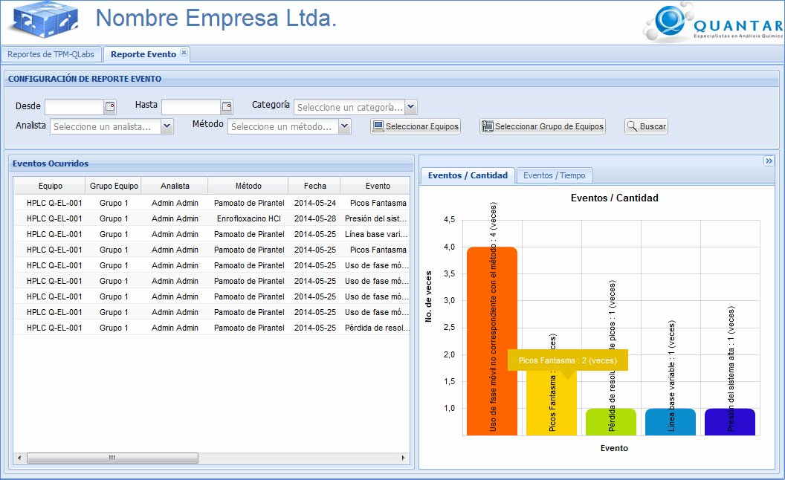

MANUAL DE USUARIO
TPM-QLabs - REPORTE EVENTOS
El reporte de eventos permite
visualizar los eventos que ocurren dada una configuración
específica. Al lado derecho de la pantalla se muestran dos
gráficos: uno que permite observar la frecuencia de ocurrencia de
los eventos tal y como se muestra en la Figura 1 y otro que permite
observar el tiempo de duración de cada evento tal y como se muestra
en la Figura 2. Además, también se muestra un listado de todos
los eventos ocurridos cada uno con información detallada.
Para configurar el reporte de eventos es posible seleccionar el periodo entre fechas a través de los campos Desde y Hasta, la categoría del evento, el analista, el método, los equipos y los grupos de equipos registrados en el sistema. Para seleccionar los equipos, el usuario debe dar clic en el botón Seleccionar Equipos y se desplegará una interfaz con los equipos disponibles. A continuación el usuario debe seleccionar los equipos de su interés y dar clic en el botón Aceptar, tal y como se muestra en la Figura 3. Para seleccionar los grupos de equipos, el usuario debe dar clic en el botón Seleccionar Grupo de Equipos y se desplegará una interfaz con los grupos de equipos registrados. El usuario debe seleccionar de los grupos de equipos disponibles, aquellos grupos de equipos que son de su interés y dar clic en el botón Aceptar, tal y como se muestra en la Figura 4.
Para configurar el reporte de eventos es posible seleccionar el periodo entre fechas a través de los campos Desde y Hasta, la categoría del evento, el analista, el método, los equipos y los grupos de equipos registrados en el sistema. Para seleccionar los equipos, el usuario debe dar clic en el botón Seleccionar Equipos y se desplegará una interfaz con los equipos disponibles. A continuación el usuario debe seleccionar los equipos de su interés y dar clic en el botón Aceptar, tal y como se muestra en la Figura 3. Para seleccionar los grupos de equipos, el usuario debe dar clic en el botón Seleccionar Grupo de Equipos y se desplegará una interfaz con los grupos de equipos registrados. El usuario debe seleccionar de los grupos de equipos disponibles, aquellos grupos de equipos que son de su interés y dar clic en el botón Aceptar, tal y como se muestra en la Figura 4.

Figura 1. Pantalla de reporte de
eventos con gráfico de eventos por cantidad.
Figura 2. Pantalla de reporte de eventos con gráfico de eventos por tiempo.
Interfaz para la selección de equipos
A continuación se muestra la
intefaz en la cual puede seleccionar los equipos para configurar
el reporte diario.

Interfaz
para la selección de grupos de equipos
A continuación se muestra la intefaz en la cual puede seleccionar los grupos de equipos para configurar el reporte diario.
A continuación se muestra la intefaz en la cual puede seleccionar los grupos de equipos para configurar el reporte diario.

Figura 4. Pantalla para
seleccionar los grupos de equipos.